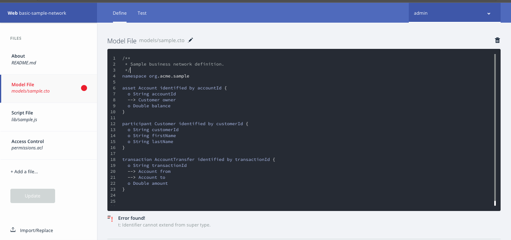

How to resolve this error (t: Identifier cannot extend from super type) on Hyperledger Composer playground?
Im following the Hyperledger tutorial Youtube Link and the instructor modifies a sample contract. However with the current version of Hyperledger fabric playground which can be accessed online, there is no mention of state after entering the accountTransfer function. This leads to an error as shown below: 
How to solve the same? I have tried searching for answers but I couldnt find any which addresses this specific issue.
Answer
t: stands for transaction.
you have two problems in your model
-
transactionId is already reserved (you don't need to model/define it - a transaction Id is returned when a transaction is submitted - Or call the field something else if you are using it for your own transaction purposes) - the Docs do mention this about transactionId https://hyperledger.github.io/composer/reference/cto_language.html
-
you do not use 'identified by' in your definition of the transaction - unlike Participants and Assets
see -> https://hyperledger.github.io/composer/reference/js_scripts.html and our sample networks (which you can browse) show examples of modeled transactions -> https://github.com/hyperledger/composer-sample-networks
I would add that more info about modeling transactions should be included in the page ref in 1. above.
Finally for this out-of-context 't:' error (ie item 1 above) - we have an outstanding Github issue (a different kind of problem producing the error, but the same error results nonetheless). https://github.com/hyperledger/composer/issues/1497